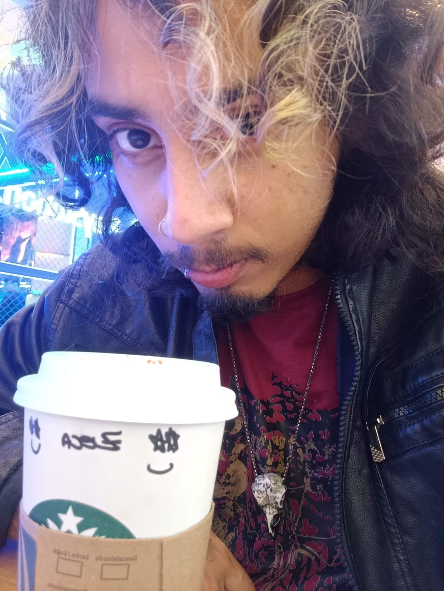
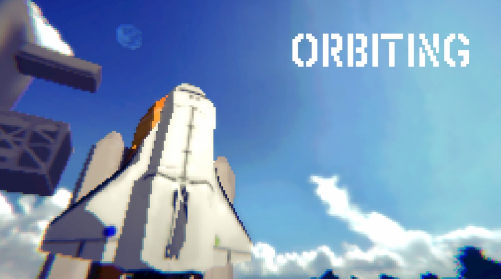

01 / ESTÁGIO
Desenvolvimento Web
Plataforma de ensino de idiomas
Criei e mantive páginas para uma plataforma de idiomas. Foi uma das minhas primeiras experiências com entregas reais, manutenção e trabalho em equipe.
WEB · FRONT-END
OI, PRAZER. SOU O JOSÉ.
Sou José Carlos, de São Paulo. Comecei minha trajetória programando para web e trabalhando com dados, mas foi no desenvolvimento de jogos que encontrei o tipo de problema que mais gosto de resolver. Hoje crio principalmente com Unity e Godot.


UM DOS MEUS PROJETOSORBITING ↗Um pouco do que fiz em cada projeto — de mecânicas e sistemas às decisões que foram aparecendo no caminho.
Antes de fazer jogos, trabalhei com sites e com dados. Depois, no Izzy & Alli, pude juntar programação, áudio e desenvolvimento em equipe.
Plataforma de ensino de idiomas
Criei e mantive páginas para uma plataforma de idiomas. Foi uma das minhas primeiras experiências com entregas reais, manutenção e trabalho em equipe.
Python · Tratamento e visualização de dados
Trabalhei com Python na organização e visualização de conjuntos de dados. Isso reforçou uma parte da programação de que gosto muito: entender um problema antes de construir a solução.
Programação em Godot e direção de áudio
No Izzy & Alli, participei da programação de sistemas como quests e interfaces, além de contribuir com o áudio. Trabalhar em um jogo que passou da competição para eventos como a gamescom me ensinou muito sobre continuidade e colaboração.
Ver o Izzy & AlliMinha formação técnica veio antes da graduação em jogos — e as duas continuam aparecendo no que eu desenvolvo.
Graduação tecnológica com foco em programação, game design e criação de projetos em equipe.
A base da minha trajetória em desenvolvimento de software e resolução de problemas.
Gosto tanto de desmontar mentalmente uma mecânica quanto de sentar e jogar sem pensar em como ela foi feita.
Participo de game jams, experimento ideias pequenas e gosto de trabalhar com pessoas de áreas diferentes. Às vezes estou ajustando controles no Unity; outras vezes, pensando em como uma interface, uma música ou um detalhe muda a sensação do jogo.
Movimentação, combate, física e aquela tentativa de fazer os controles parecerem naturais.
UNITY · C# · GODOTInterfaces, inventários, progressão, salvamento e as partes que conectam tudo.
UI · PROGRESSÃO · SAVEDesenvolvimento web e análise de dados também fazem parte do meu jeito de resolver problemas.
WEB · TYPESCRIPT · PYTHONNão é uma lista de referências obrigatórias. São jogos a que sempre volto, ou que me fizeram olhar para design e narrativa de outro jeito.
A vontade de explorar, se perder um pouco e descobrir o que existe depois da próxima curva.
Combate com ritmo e uma história que continua crescendo a cada tentativa.
Um mundo que dá ferramentas e deixa a criatividade decidir o resto.
A sensação de que um jogo ainda consegue surpreender quando você acha que já entendeu tudo.
Personagens, humor e escolhas que fazem a experiência parecer muito pessoal.
Outros jogos, trabalhos de faculdade e experimentos que também me ensinaram alguma coisa.
Se você quer conversar sobre jogos, trocar ideias ou conhecer melhor algum projeto, meu contato está aqui.
Enviar um e-mail